T2-Splat: Adaptive Topology Mesh Splatting
with Texture Residuals
1Huazhong University of Science and Technology 2Donghua University
NeurIPS 2026
Video Overview
Abstract
Triangle-based splatting connects novel view synthesis with conventional graphics pipelines, but often requires excessive tessellation to preserve appearance details. We present T2-Splat, which decouples topology adaptation from appearance refinement. Safe Restricted Delaunay Triangulation (Safe RDT) initializes mesh connectivity. Dynamic Topology Evolution (DTE) then adapts triangle allocation through edge collapse and vertex split operations. Residual per-face Mip-textures then refine appearance on the fixed mesh using scale-adaptive filtering. Experiments on Mip-NeRF 360, Tanks & Temples, and DTU demonstrate competitive results with compact meshes. T2-Splat improves PSNR by 0.71 dB over MeshSplatting on Mip-NeRF 360. Additional compression experiments demonstrate flexible control of mesh complexity, supporting face budgets as low as 10% of the original face count.
Approach
A two-stage pipeline separates geometry and topology optimization from appearance refinement. The first stage constructs a connected mesh and adapts its triangle allocation. The second stage recovers high-frequency details while keeping the geometry fixed.
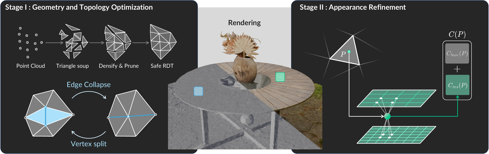
- Safe RDT. Candidate faces are selected and consistently oriented with edge-incidence and vertex-fan constraints, supporting open boundaries and multiple connected components.
- Dynamic Topology Evolution. Edge collapse removes redundant geometry; vertex split restores local degrees of freedom. Their relative rates control the final triangle budget.
- Residual Mip-textures. Zero-initialized per-face textures and vertex spherical harmonics are jointly optimized on fixed geometry. Mip-based sampling filters the appearance according to viewing scale.
Visual Comparisons
Drag the divider in each image to compare the same view. You can also focus a slider and use the arrow keys.
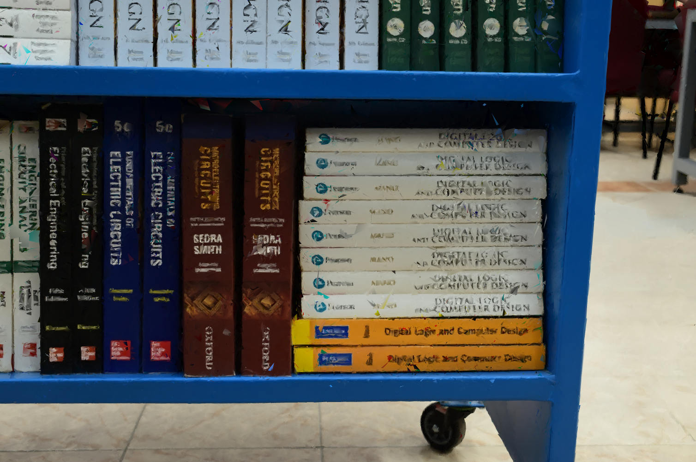
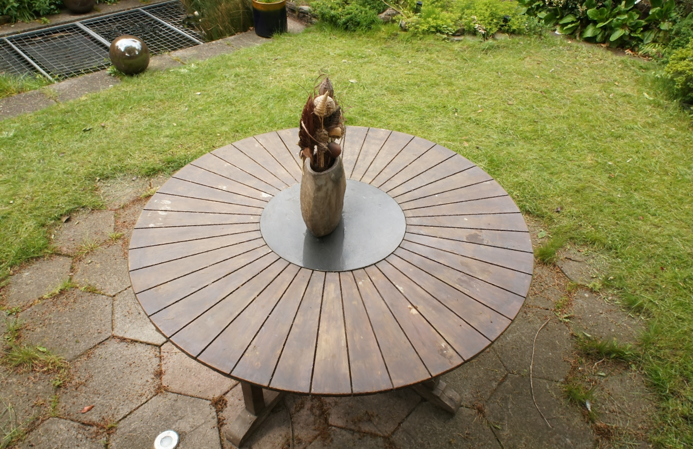
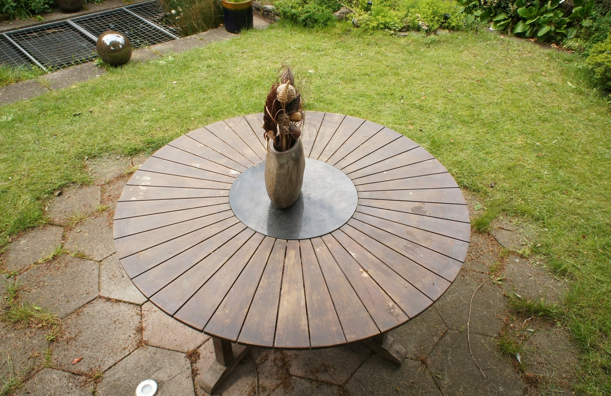
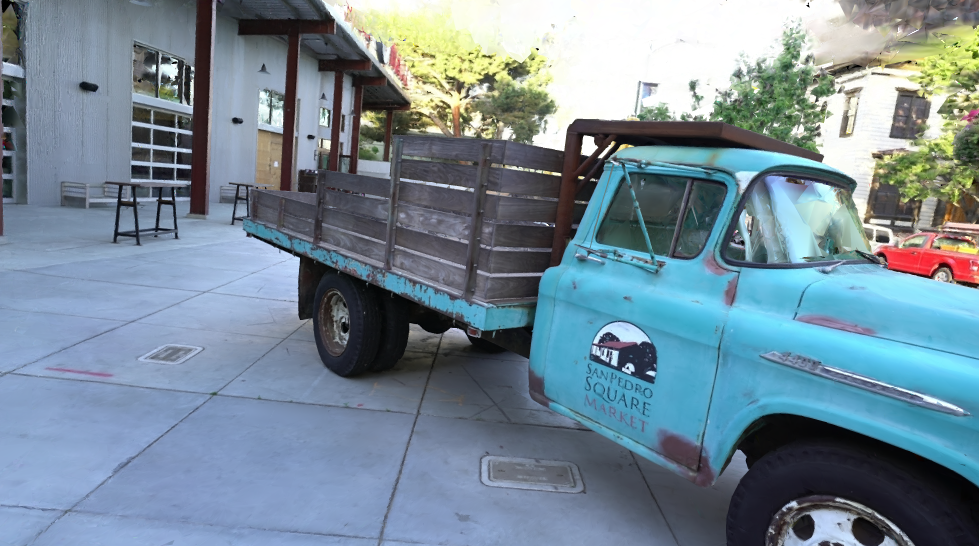
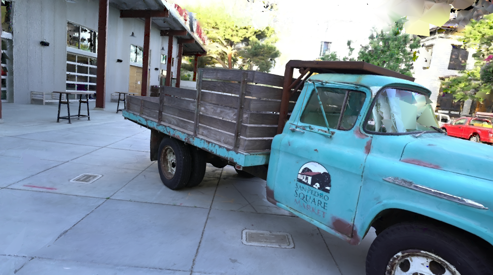
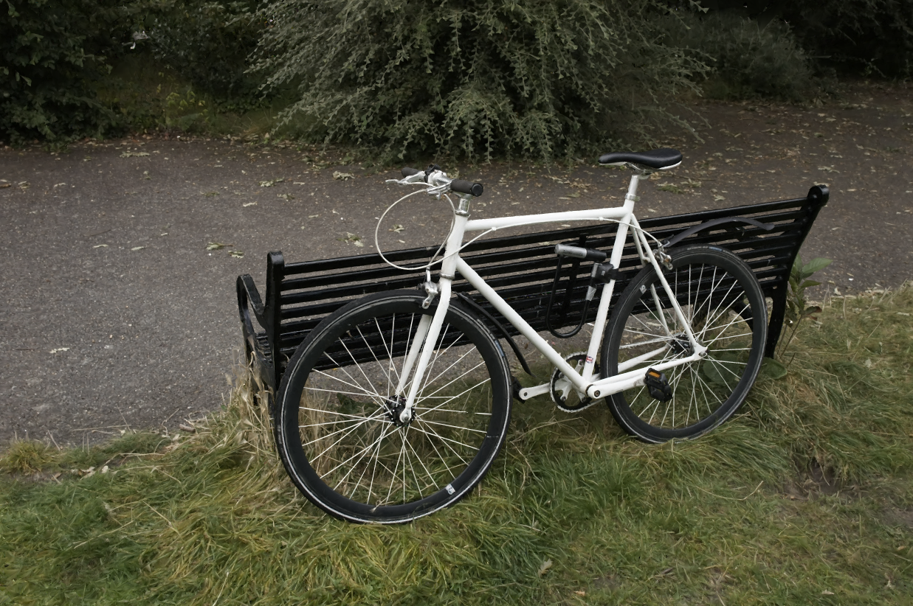
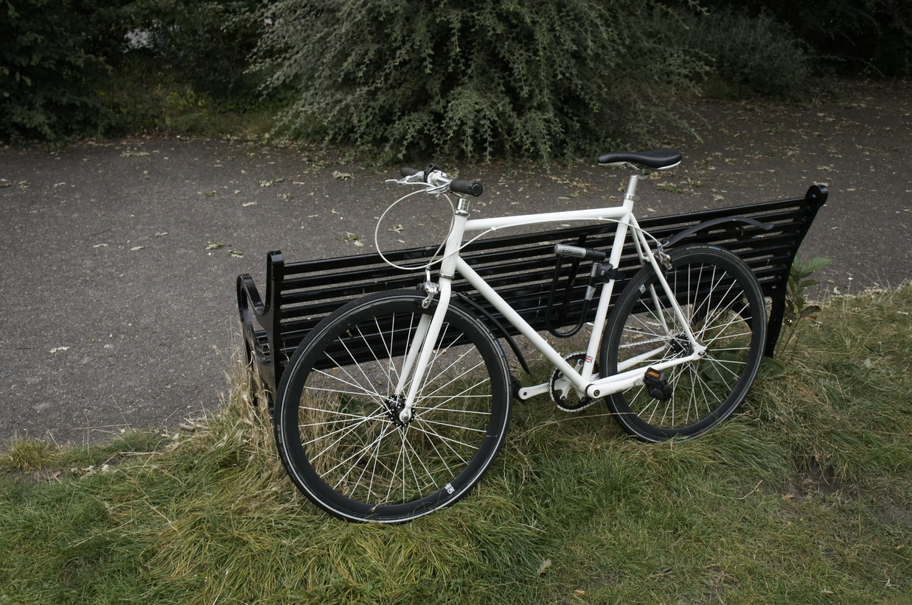
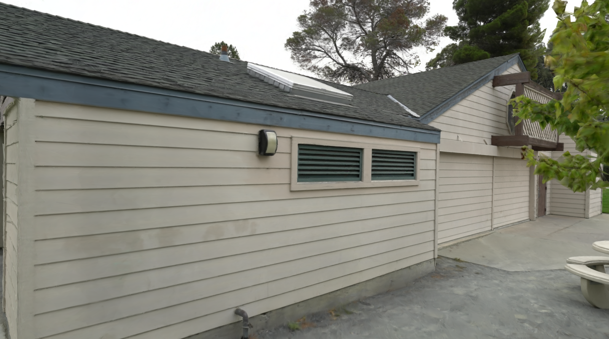
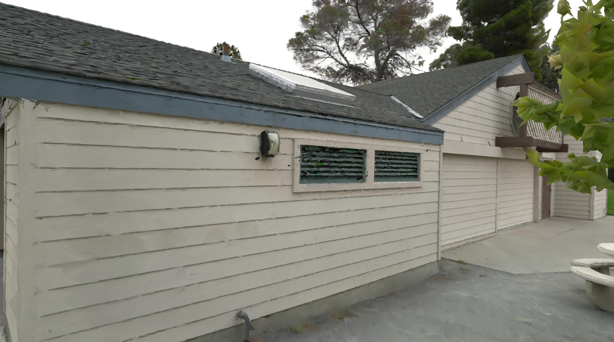
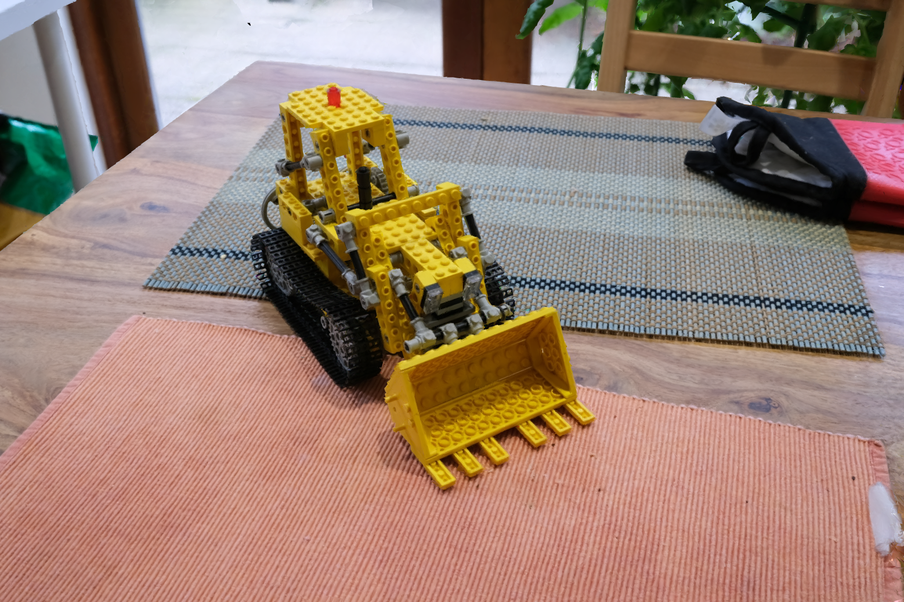
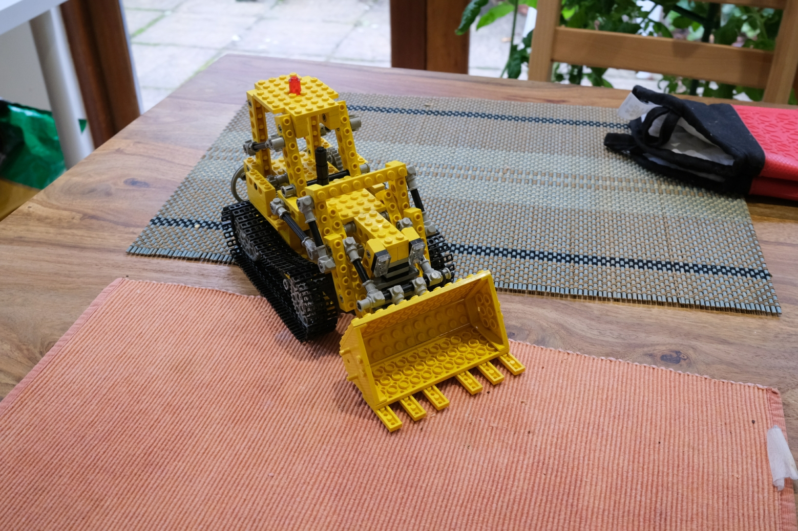
Ground-truth views are reference photographs. Shelf is an additional STRinGS-360 example, separate from the evaluation averages below.
Comparisons with the State of the Art
Mesh-based novel-view synthesis results from Table 1 of the paper. Mip-NeRF 360 reports nine-scene averages; Tanks & Temples reports the Truck and Train average. All rows below use mesh-based rendering. Higher PSNR and SSIM and lower LPIPS indicate better quality.
| Method | Mip-NeRF 360 | Tanks & Temples | ||||
|---|---|---|---|---|---|---|
| PSNR ↑ | LPIPS ↓ | SSIM ↑ | PSNR ↑ | LPIPS ↓ | SSIM ↑ | |
| 2DGS | 15.36 | 0.474 | 0.498 | 14.23 | 0.485 | 0.569 |
| GOF | 20.78 | 0.465 | 0.573 | 21.69 | 0.326 | 0.690 |
| RaDe-GS | 23.56 | 0.361 | 0.668 | 20.51 | 0.344 | 0.659 |
| MiLo | 24.09 | 0.323 | 0.688 | 21.46 | 0.348 | 0.706 |
| Gaussian Wrapping | 25.10 | 0.289 | 0.752 | 20.98 | 0.367 | 0.700 |
| Triangle Splatting | 21.05 | 0.462 | 0.558 | 17.27 | 0.402 | 0.600 |
| MeshSplatting | 24.78 | 0.310 | 0.728 | 20.52 | 0.287 | 0.745 |
| T2-Splat (Ours) | 25.49 | 0.234 | 0.779 | 21.12 | 0.213 | 0.795 |
T2-Splat improves PSNR by 0.71 dB over MeshSplatting on Mip-NeRF 360. On DTU, it obtains a mean Chamfer distance of 0.68 across 15 scenes, tied for the second-best mean among the methods in Table 2.
Controlling Mesh Complexity
Changing the relative rates of edge collapse and vertex split controls the final face budget. Each T2-Splat budget configuration is trained separately with Stage I topology optimization followed by Stage II appearance refinement.
| Method | PSNR ↑ | LPIPS ↓ | SSIM ↑ | #Faces ↓ |
|---|---|---|---|---|
| RaDe-GS | 22.67 | 0.21 | 0.743 | 60.8M |
| GOF | 22.99 | 0.26 | 0.706 | 92.1M |
| 2DGS | 21.90 | 0.32 | 0.608 | 10.6M |
| MiLo | 23.29 | 0.22 | 0.738 | 14.9M |
| MeshSplatting | 24.70 | 0.22 | 0.762 | 7.3M |
| Gaussian Wrapping | 23.45 | 0.27 | 0.717 | 31.2M |
| T2-Splat (100%) | 25.68 | 0.15 | 0.818 | 2.7M |
| T2-Splat (50%) | 25.38 | 0.17 | 0.801 | 1.4M |
| T2-Splat (10%) | 23.93 | 0.30 | 0.697 | 0.3M |
Rendering in Standard Graphics Pipelines
The optimized mesh can be exported to standard formats. On the Garden scene, the baked vertex-colored PLY renders at 236 FPS in OpenGL at 1920 × 1080 on a MacBook Air M3, with a 62 MB mesh file. MeshSplatting reports 126 FPS and 152 MB under the same setting.
| Method | FPS ↑ | Storage ↓ | #Faces ↓ |
|---|---|---|---|
| GOF | OOM | 1.8 GB | 92.1M |
| RaDe-GS | OOM | 1.1 GB | 60.8M |
| MiLo | 82 | 314 MB | 14.9M |
| MeshSplatting | 126 | 152 MB | 7.3M |
| Gaussian Wrapping | 40 | 638 MB | 31.2M |
| T2-Splat (Ours) | 236 | 62 MB | 2.7M |
Vertex-colored mesh · PLY
Bake spherical harmonics and residual textures into vertex RGB. The default export preserves the original vertices, faces, and connectivity.
Textured mesh · GLB
Bake per-face RGB textures into embedded PNG atlases. The triangle count stays unchanged; face corners are expanded to support independent UVs.
Both exports use static baked appearance and do not preserve view-dependent effects. PLY can smooth fine texture details; GLB retains more intra-face detail, but its viewer mipmaps differ from training-time per-face LOD sampling. The reported FPS and storage refer to the baked PLY.
BibTeX
@misc{tang2026t2splatadaptivetopologymesh,
title={T$^2$-Splat: Adaptive Topology Mesh Splatting with Texture Residuals},
author={Zhihao Tang and Youjia Zhang and Mingbo Zhao and Wei Yang},
year={2026},
eprint={2611.06974},
archivePrefix={arXiv},
primaryClass={cs.CV},
url={https://arxiv.org/abs/2611.06974},
}